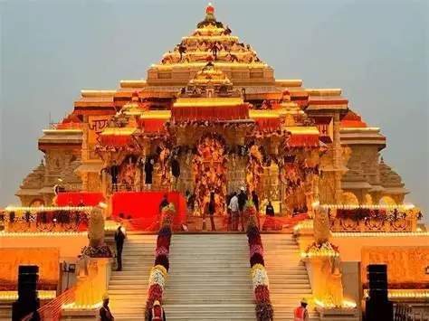
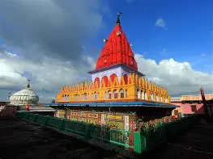
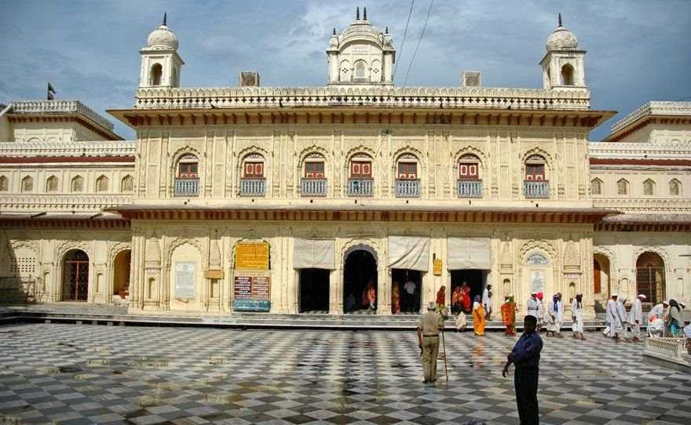
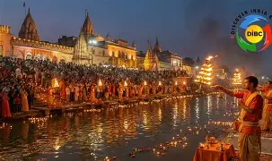
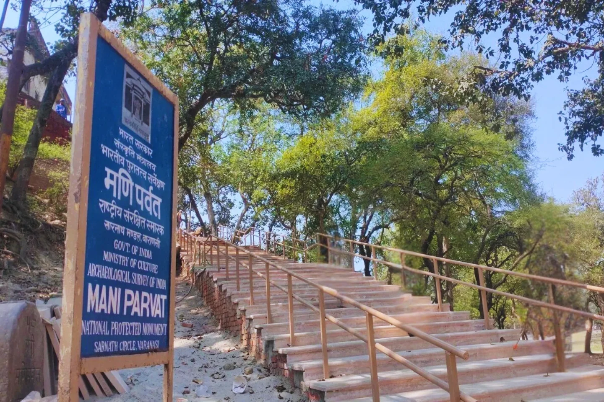
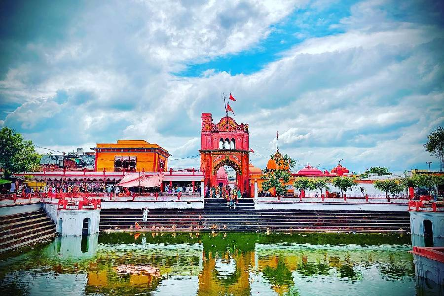
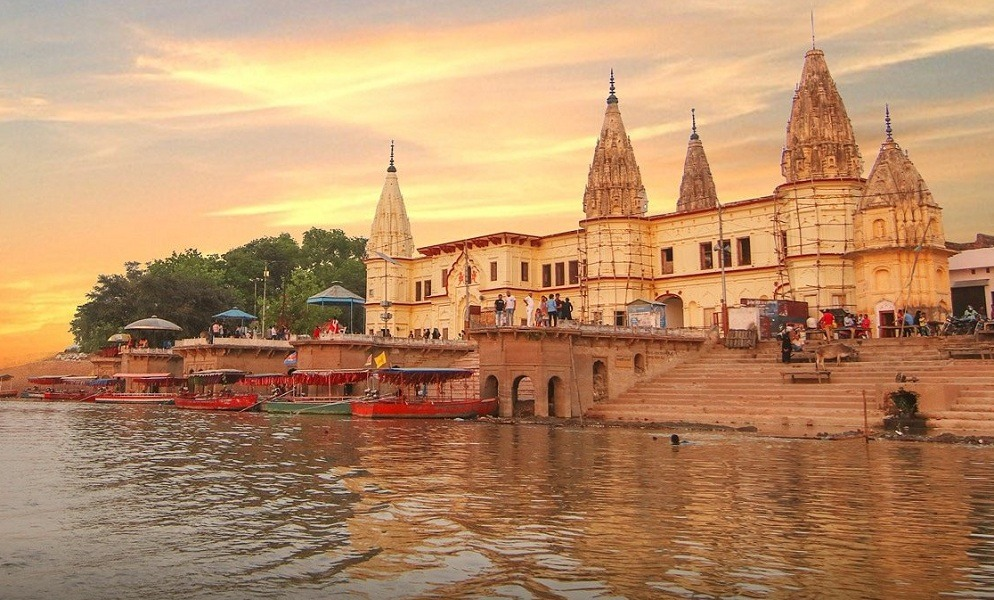
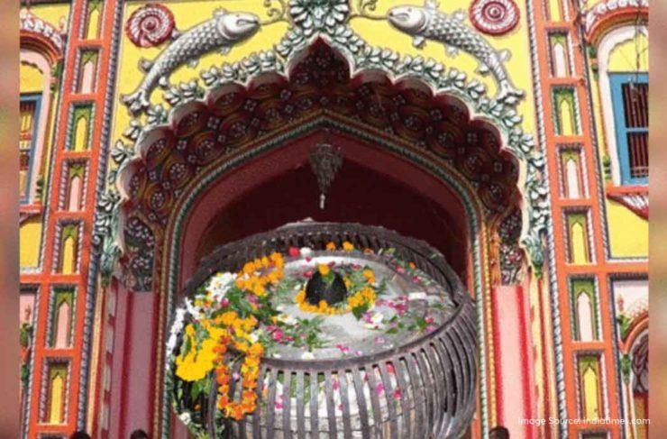
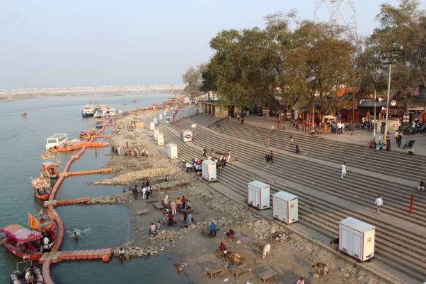
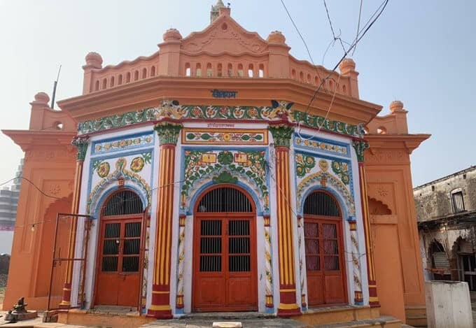

Sacred Ram Mandir Destination
Ayodhya
Experience the spiritual heart of Ayodhya with temple visits, Saryu ghats, evening aarti, guided local travel, stay assistance, and family-friendly pilgrimage planning.
About Destination
Why Visitors Choose Ayodhya
Ayodhya is one of India’s most revered pilgrimage cities and a major center for Ramayana heritage. Visitors come here for Shri Ram Janmabhoomi Mandir, peaceful ghats on the Saryu River, devotional evenings, and a calm family pilgrimage atmosphere. Ramnagari Tourism helps guests cover temple routes, darshan timing, local sightseeing, hotel coordination, and comfortable cab services for a smooth visit.
Ram Mandir
Saryu Aarti
Local Sightseeing
Family Tour Support
Best For
Pilgrims, families, senior citizens, devotional groups, and short spiritual stays.
Suggested Trip Length
1 to 2 days for darshan, local temple circuit, and evening ghat experience.
Travel Support
Pickup, local cabs, temple route planning, hotel help, and enquiry assistance.
Sacred Sightseeing
Explore Ayodhya
Discover Ayodhya's revered temples, peaceful ghats, and timeless heritage landmarks.

Hanuman Garhi
A hilltop shrine with a powerful devotional spirit.
Climb its steps for Hanuman ji's blessings.

Kanak Bhawan
An elegant temple of Lord Ram and Sita.
Known for its beautiful idols and peaceful courtyard.

Ram Ki Paidi
A scenic series of ghats by the Saryu.
Best enjoyed at sunset and during the evening aarti.

Mani Parbat
A historic hill connected with Ramayana legends.
Its summit offers calm views of the city.

Devkali
A revered Devi temple with deep local faith.
A serene stop on Ayodhya's temple circuit.

Guptar Ghat
A tranquil riverside ghat with sacred importance.
Perfect for a quiet walk beside the Saryu.

Nageshwar Nath
An ancient Shiva temple close to the riverfront.
Especially vibrant during Mahashivratri celebrations.

Saryu Ghat
A holy riverfront for prayer and reflection.
Stay for the glowing evening aarti by the water.

Sita Ki Rasoi
A heritage shrine linked to Mata Sita's kitchen.
See traditional utensils and devotional displays.
Image Gallery
Destination Photos


Admin Photo Upload
Upload multiple destination images to preview them on this page before publishing.
Video Section
Add Reels, Walkthroughs, or Darshan Clips
Show temple surroundings, local route guidance, hotel walkthroughs, or a devotional atmosphere video for visitors planning an Ayodhya trip.
Admin Video Upload
Upload a local video file or paste a YouTube link to preview travel media.
Uploaded video preview will appear here.
Paste a YouTube link to preview it here.
Popular Places To Visit
- Shri Ram Janmabhoomi Mandir
- Hanuman Garhi
- Kanak Bhawan
- Saryu Ghat and evening aarti
Tour Package Details
Local half-day and full-day darshan packages are available with pickup, waiting support, and family-friendly route planning. Ayodhya can also be combined with Prayagraj or Varanasi.
Hotel Options
Budget, standard, and deluxe stay options near temple routes and main roads can be coordinated based on group size, darshan plans, and comfort preference.
Need Cab Booking or Quick Enquiry For Ayodhya?
Get local sightseeing support, hotel help, and trusted cab arrangements for your Ayodhya visit.